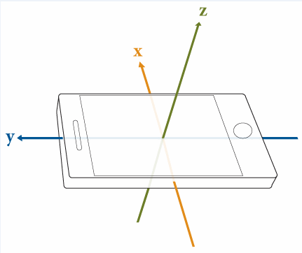

To communicate with the iOS device and acquire data from the
sensors, create the mobiledev object. You use the mobiledev function
in MATLAB® to create the object, which you can do before or after
turning on the sensors. You cannot log the sensor data, however, until
you create the object.
This example assumes that you have already installed and set up MATLAB Mobile™ on your iOS device and connected it to your computer running MATLAB or to the MathWorks Cloud. For information about these steps, see Get Started with iOS Sensors.
Start MATLAB Mobile on your iOS device.
On the Sensors screen of MATLAB Mobile, tap the sensors that you want to send data from. Do not tap the Start button on the device. You can start logging data from MATLAB.
Place the device where you want to acquire the sensor data.
From your computer running MATLAB, connect to the device.
connector onAlternatively, if you are running MATLAB using MathWorks Cloud, log in to the Cloud.
In MATLAB, create a mobiledev object, m.
m = mobiledev
mobiledev with properties:
Connected: 1
Logging: 0
InitialTimestamp: ''
AccelerationSensorEnabled: 1
AngularVelocitySensorEnabled: 1
MagneticFieldSensorEnabled: 1
OrientationSensorEnabled: 1
PositionSensorEnabled: 1
Supported functionsIn the display that is shown when you create the object, a value
of 1 means enabled or on, and 0 means
not enabled or off. In this example, you can see that the device and
computer are connected, but data has not been logged yet. This device
contains all five sensors, but your device may not. If your device
does not have a particular sensor, that sensor always shows a 0 in
the display. The InitialTimestamp property is empty
because no data has been logged yet.
You can begin logging data from the selected sensors
by enabling the Logging property.
m.Logging = 1
This action starts transmitting data from all selected sensors.
After you start logging data, a display of the object shows current values:
disp(m)
mobiledev with properties:
Connected: 1
Logging: 1
InitialTimestamp: '06-08-2014 13:45:56.529'
AccelerationSensorEnabled: 1
AngularVelocitySensorEnabled: 1
MagneticFieldSensorEnabled: 1
OrientationSensorEnabled: 1
PositionSensorEnabled: 1
Current Sensor Values:
Acceleration: [0.27 0.23 -10.19] (m/s^2)
AngularVelocity: [-0.22 0.07 0.06] (rad/s)
MagneticField: [3.56 1.56 -48.19] (microtesla)
Orientation: [85.91 -27.1 0.35] (degrees)
Position Data:
Latitude: 41.29 (degrees)
Longitude: -72.35 (degrees)
Speed: 25 (m/s)
Course: 83.6 (degrees)
Altitude: 200.1 (m)
HorizontalAccuracy: 9.0 (m)
Supported functionsIn this display, you can see that the device and computer are
connected, and data is now being logged. Also, the InitialTimestamp property
value and the sensor values are displayed, indicating the current
measurement value when you created the object.
This example assumes that you have already installed and set up MATLAB Mobile on your iOS device and connected it to your computer running MATLAB or to the MathWorks Cloud. For information about these steps, see Get Started with iOS Sensors.
Start MATLAB Mobile on your iOS device.
On the Sensors screen, tap the sensors that you want to send data from.
Place the device where you want to acquire the sensor data.
From your computer running MATLAB, connect to the device.
connector onAlternatively, if you are running MATLAB using MathWorks Cloud, log in to the Cloud.
In MATLAB, create a mobiledev object, m.
m = mobiledev
mobiledev with properties:
Connected: 1
Logging: 0
InitialTimestamp: ''
AccelerationSensorEnabled: 1
AngularVelocitySensorEnabled: 1
MagneticFieldSensorEnabled: 1
OrientationSensorEnabled: 1
PositionSensorEnabled: 1
Supported functionsIn the display, a value of 1 means enabled
or on, and 0 means not enabled or off. In this
example, you can see that the device and computer are connected, but
data is not being logged yet. This device contains all five sensors,
but your device may not. If your device does not have a particular
sensor, that sensor will always show a 0 in the
display. The timestamp is empty because no data has been logged yet.
Begin logging data from the selected sensors by enabling
the Logging property.
m.Logging = 1
This action starts the transmitting of data from all selected sensors. You can also start transmission by tapping the Start button in MATLAB Mobile.
Look at the object now that you have started logging
data, using the disp function.
disp(m)
mobiledev with properties:
Connected: 1
Logging: 1
InitialTimestamp: '06-08-2014 13:45:56.529'
AccelerationSensorEnabled: 1
AngularVelocitySensorEnabled: 1
MagneticFieldSensorEnabled: 1
OrientationSensorEnabled: 1
PositionSensorEnabled: 1
Current Sensor Values:
Acceleration: [0.27 0.23 -10.19] (m/s^2)
AngularVelocity: [-0.22 0.07 0.06] (rad/s)
MagneticField: [3.56 1.56 -48.19] (microtesla)
Orientation: [85.91 -27.1 0.35] (degrees)
Position Data:
Latitude: 41.29 (degrees)
Longitude: -72.35 (degrees)
Speed: 25 (m/s)
Course: 83.6 (degrees)
Altitude: 200.1 (m)
HorizontalAccuracy: 9.0 (m)
Supported functionsIn this display, you can see that the device and computer are
connected, and data is now being logged. You can also now see the InitialTimestamp property
value, and the sensor values are displayed, indicating the current
measurement value when you created the object.
While you are logging data, you can display the current
value of any sensor using the sensor reading properties. The Acceleration, AngularVelocity, Orientation,
and MagneticField properties display the current
readings from their respective sensors. If the Position sensor is
logging, you can get individual position readings using the Latitude, Longitude, HorizontalAccuracy, Altitude, Course,
and Speed properties.
To get the current value from a sensor, use <objectname>.<propertyname>.
For example, to get the acceleration reading, for object m:
m.Acceleration
ans =
0.6945 -0.2579 9.9338 To get the longitude reading from the Position sensor:
m.Longitude
ans =
-71.3517 You can turn the sensors on and off using the sensor
control properties in MATLAB. Using the control properties is the
same as selecting or deselecting the sensor buttons in MATLAB
Mobile.
Each control property has two possible values: 1 for
on or enabled, and 0 for off or disabled. For example,
to turn the Acceleration sensor off from MATLAB:
m.AccelerationSensorEnabled = 0
To turn the Acceleration sensor back on:
m.AccelerationSensorEnabled = 1
Stop logging sensor data.
m.Logging = 0
You can use the sensor reading properties to get the
current value of a sensor while you are logging data, as shown in
step 7. If you want to see the entire log of all readings, use the
log functions. You can use these functions while you are still logging
data, or after you stop. Each sensor type has a log function, for
example, accellog returns the logged acceleration
data from the Acceleration sensor.
To get the logged acceleration data from object m,
assign the variable a for the logged acceleration
data and t for the timestamps.
[a, t] = accellog(m);
You can then plot the data or do other data processing.
When you are done with the session, delete the object.
clear mClose the connection between MATLAB and the iOS device.
connector offThe Acceleration, Angular Velocity, Magnetic Field, and Orientation
sensors all log data in relation to the X, Y and Z axes.
This diagram shows these axes relative to the device.

For information on orientation for position, see the iOS documentation.